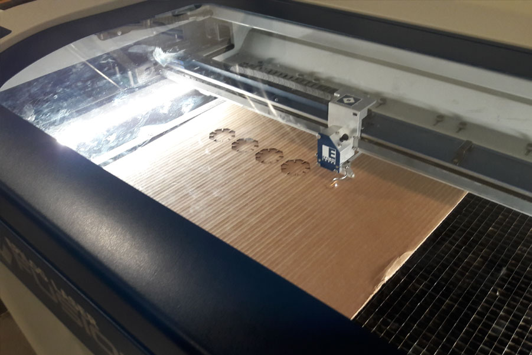
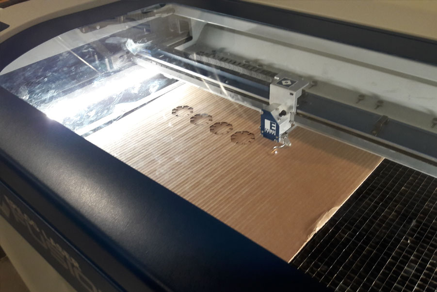

A2: CAD model + fabricated output!

Write up of process
- Created a new file in Rhino
- Followed the in class tutorial for Grasshopper parametric control
- Created shapes I felt were aesthecially appealing in Rhino
- Using calipers, measured width of two different sheets of cardboard = 3mm, 7mm respectively
- Using Grasshopper, set the width of the parametric "slot connector" rectangles 3mm, subtracted recangles from desired shape
- Using Grasshopper, set the width of the parametric "slot connector" rectangles 7mm, subtracted recangles from desired shape
- Exported a file with 3mm "slot connector" widths to Illustrator
- Exported a file with 7mm "slot connector" widths to Illustrator
- Set the line widths to both files to .001-in. in Illustrator
Problems in file creation and how I resolved them
- I had difficulty in getting Grasshopper to parametrically align the rectangles to the shapes I wanted and remain entirley in Grasshopper
- To resolve this, I simply drew a shape like a triangle in Rhino and aligned it to the Grasshopper parametric circle/rectangle feature
- Next step was to Bake the Grasshopper parametric design
- From there it was a simple task to Trim away unwanted segments
- Using this method I was able to create the shapes I wanted in the design

Source files
Machine settings
- Ensured the laser cutter was turned on
- Ensured the exhaust was turned on
- Ensured air the compressor was enabled
- Loaded the aprx. 18" x 24" scrap cardboard I brought to class
- Installed the focus key
- Raised the z axis table height until light contact was with the cardboard
- Removed the key
- Hit File, Print, selected the laser cutter
- Set laser cutting settings to the following:
- Speed = 25
- Power = 100
- Frequency = 100
- Hit OK to send the file
- Success! The patterns cut as I hoped for

 

Kit design and execution
- I challenged myself to cut a variety of shapes
- My initial cut of the 7mm did not go all the way through
- I learned that with 7mm I had to send the same file again for the final cut
- I did not chamfer the triangle pieces for aesthetic reasons
- Difficulty in press-fitting the non-champhered was minimal and I was able to keep the pointy aesthetice I desired
- The 3mm material is easier to work with than the 7mm, but not robust
- Of the two widths, I prefer the 7mm as it has a mechanical aesthetic I enjoy
Stability test
- 3mm material construction shake test
- 7mm material construction shake test
Peer-attribution
- Special thanks to @Irina Smoke, who helped me "talk out" how to set the exact size of a rectangle in Rhino during class
- Special thanks to @Angel Vuonga, who helped me better understand Grasshopper and rotation in Rhino during class
- Special thanks to @Dave Kennedy, who I ran into at the mill. We talked out advantages and disagvantages of different materials which helped me alot
Thank You!